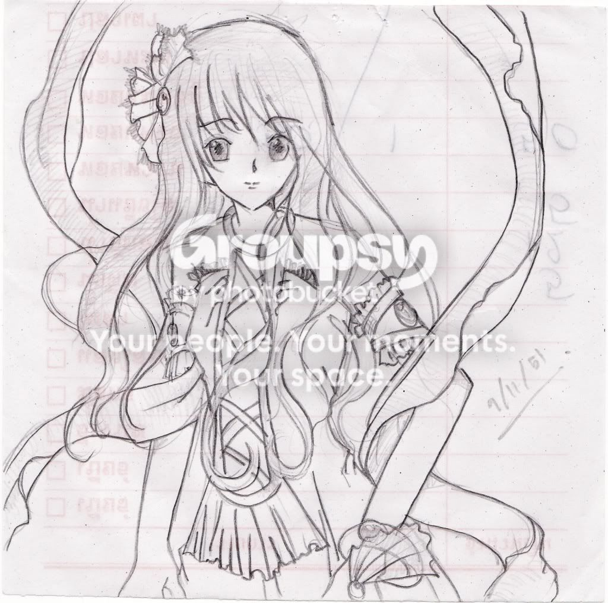
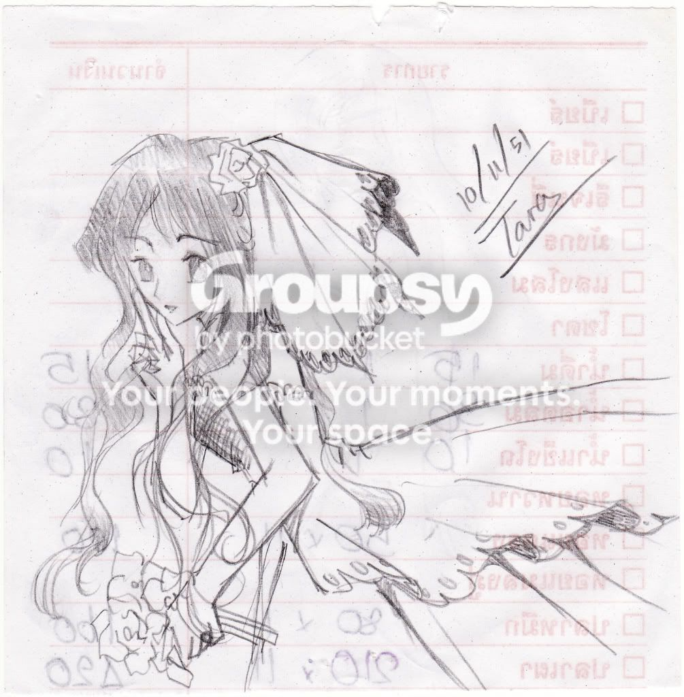
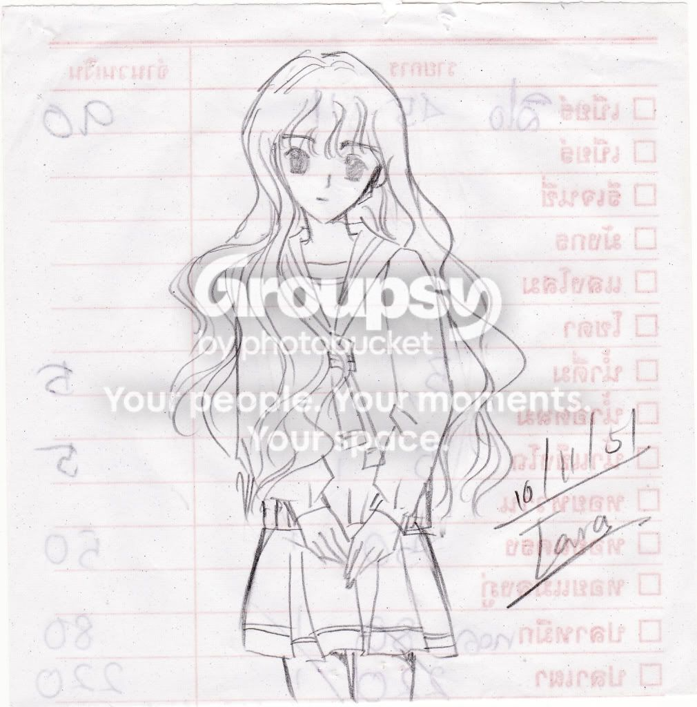

หน้า 2 จากทั้งหมด 5

โพสต์แล้ว:
อาทิตย์ 09 พ.ย. 2008 11:41 amโดย ECO
ตัดเส้นให้เข้มครับ ภาพมันดูเบลอๆ
(วาดเส้นผมได้สวยมากๆ :yoyo53: )
โพสต์แล้ว:
อาทิตย์ 09 พ.ย. 2008 2:32 pmโดย ECO

อัพรูปที่ 3 จ๊ะ วาดสดๆร้อนๆวันนี้เลย^^ :yoyo110: [/img]
โพสต์แล้ว:
อาทิตย์ 09 พ.ย. 2008 3:41 pmโดย ECO
ว้าววววววววววววววววววววว~ :yoyo58:
รูกปที่3ก็สวยแฮะ :yoyo58:
แตกต่างจากหนูมากเลยอ้ะ
เอ่อ คุรเรียนพวกวาด ๆ เขียน ๆ อ๊ะป่าวคะวาดสวยมากมายค่ะ :yoyo53: :yoyo58:
โพสต์แล้ว:
อาทิตย์ 09 พ.ย. 2008 4:59 pmโดย ECO
กระโปรงสั้นเหรอ ฮะฮะ ไม่หรอกงิ ของพี่วาดสั้นกว่าอีก(อ้าว กำ) :yoyo104:
โพสต์แล้ว:
อาทิตย์ 09 พ.ย. 2008 5:41 pmโดย ECO
งามมมม อีกแล้วท่านผู้โช้มมมมมมมมมมมมม
โพสต์แล้ว:
อาทิตย์ 09 พ.ย. 2008 6:48 pmโดย ECO
NiJiGoGo เขียน:งามมมม อีกแล้วท่านผู้โช้มมมมมมมมมมมมม
ช่ายยยยยยยยยยยยยยยยยยยยยยยยยยยยยยยยยยยยยยยย :yoyo53:
โพสต์แล้ว:
อาทิตย์ 09 พ.ย. 2008 7:52 pmโดย ECO
:yoyo53: :yoyo53: ไม่ได้เรียนหรอกค่ะ พอดีมีแรงบันดาลใจจากเพื่อน^^"
สมัยประถมเห็นเพื่อนวาดค่ะก็เลยอยากวาดบ้าง แล้วก็ฝึกมาเรื่อยๆจนได้ประมาณนี้แหละค่ะ
เราว่าน๊า การอ่านการ์ตูนมีผลมากเลยละค่ะ มันซึมซับ เอิ้กๆ ขอบคุณทุกความคิดเห็นมากๆเลยนะค่ะ ไว้จะพัฒนาฝีมือขึ้นอีกเยอะๆเลยค่ะ ขอบคุณค่ะ^^ :yoyo55:
โพสต์แล้ว:
จันทร์ 10 พ.ย. 2008 6:44 pmโดย ECO
สาวๆๆๆ น่ารักจังเยยย
รูป2อ่าค่า กระโปรงสั้นๆสิดี น่าร๊ากกก(กรี๊ดดด เดี๋ยวชาวบ้านรู้กันหมดว่าหนูชอบฉิ่งฉาบ)
อิจฉาคนวาดหน้าหันตรงแล้วดูดี :yoyo100:
โพสต์แล้ว:
จันทร์ 10 พ.ย. 2008 8:47 pmโดย ECO
สวยงามมากเลยค่ะ :yoyo110:
โพสต์แล้ว:
จันทร์ 10 พ.ย. 2008 9:13 pmโดย ECO
วันนี้มาลงอีก 2 รุปค่ะ วาดคร่าวๆไม่ได้ละเอียดมากมายนักเลยไม่ค่อยงามนะค่ะ^^
ไปดูกันเล้ย!!

ภาพนี้อยากเขียนจังว่า "แต่งงานกันนะ" แต่เขิล ไม่กล้าเขียน 55+ เอาเป็นว่าเขียนตรงนี้ละกันค่ะ^^b

ส่วนภาพนี้ร่างๆคร่าวๆค่ะ (หมู่นี้ชอบวาดคนผมยาวๆหยิกๆ โรคจิตรึเปล่านะเรา) หน้าดูเศร้าๆเน๊อะ ตอนวาดก็วาดให้ยิ้มนี้หว่า เอิ้กๆ สัดส่วนยอมรับค่ะว่าบิดเบี้ยวใช้ได้เลย
โพสต์แล้ว:
อังคาร 11 พ.ย. 2008 6:29 amโดย ECO
น่ารักอีกแล้วค่ะ!! แต่ไม่รุคิดไปเองรึปล่าวนะ รูสึกว่า เกือบทุกรูปช่วงลำตัวส่วนบนจะใหญ่กว่าส่วนล่างนะคะ ถ้าลองปรับตรงนี่ดูอาจจะดีขึ้นนะ แต่ผมสวยดีค่ะ ไม่แข็งดีจัง*.* ส่วนเรื่องมือก็ไม่ค่อยอยากติเพราะเราก็วาดได้ไม่ดีทะหร่าย :yoyo106: เส้นดูยุ่งไปนิดค่ะ สู้ๆค่ะ ฝึกอีกไม่นานรับรองเฟอร์เฟคค่ะ :yoyo110:
โพสต์แล้ว:
อังคาร 11 พ.ย. 2008 7:56 pmโดย ECO
โอ้ววว ขอบคุณมากๆค่ะ คุณAmulet ไม่ใช่แค่คุณที่คิดไปคนเดียวหรอกค่ะ เราเองก้คิดงั้น เอิ้กๆ แก้ไม่หายสักกะที แง่วๆๆ ชอบวาดไหล่กว้าง(กลายเป็นกระเทยเยย) จะพยายามแก้ไขนะค่ะ ส่วนเส้นที่ชอบวาดยุ่งเหยิงเพราะเวลาตัดเส้น ภาพมันจะกลายเป็น.....(เกินกว่าจะบรรยายเอาเป็นว่าไม่งามละกัน) เราก็เลยไม่ชอบตัดเส้นคร่ะ ฮา<<เพตุผลสิ้นคิดเจ๊ง :yoyo107:
ยังไงก็ขอบคุณทุกคนมากๆนะค่ะ
โพสต์แล้ว:
อังคาร 11 พ.ย. 2008 8:15 pmโดย ECO
น่าร้ากทุกรุปเยยค๊า >< :yoyo53:
โพสต์แล้ว:
พุธ 12 พ.ย. 2008 1:22 pmโดย ECO
สวยดีนะครับ
:yoyo110:
ปล.ความคิดส่วนตัวนะ= =" --- เวลาดูหน้าเศร้าๆมันเป็นเพราะดวงตาเปล่าน่ะ=w=
โพสต์แล้ว:
พุธ 12 พ.ย. 2008 3:40 pmโดย ECO
ดูแล้วมีเอกลักษณ์ดีครับ
เอกลักษณ์ของงานเป็นสิ่งสำคัญ ทำให้เพียงแค่เห็นภาพก็
ทราบว่าใครเป็นคนวาด